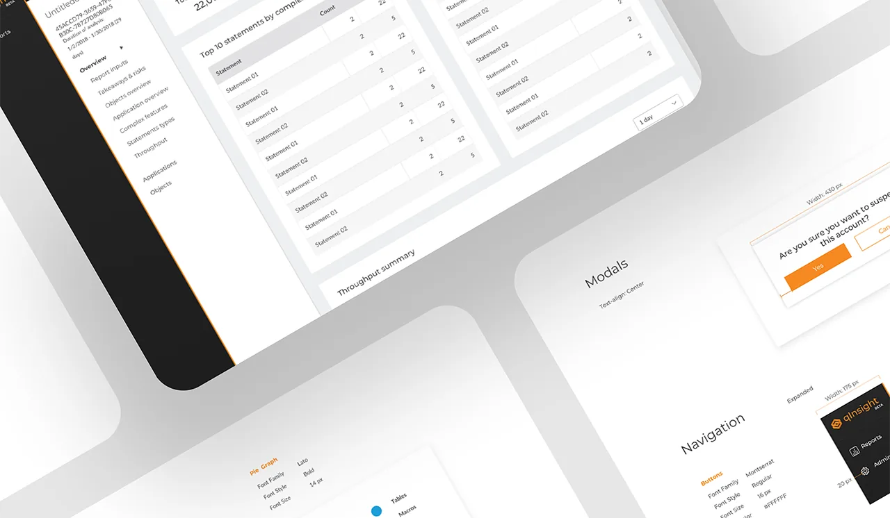
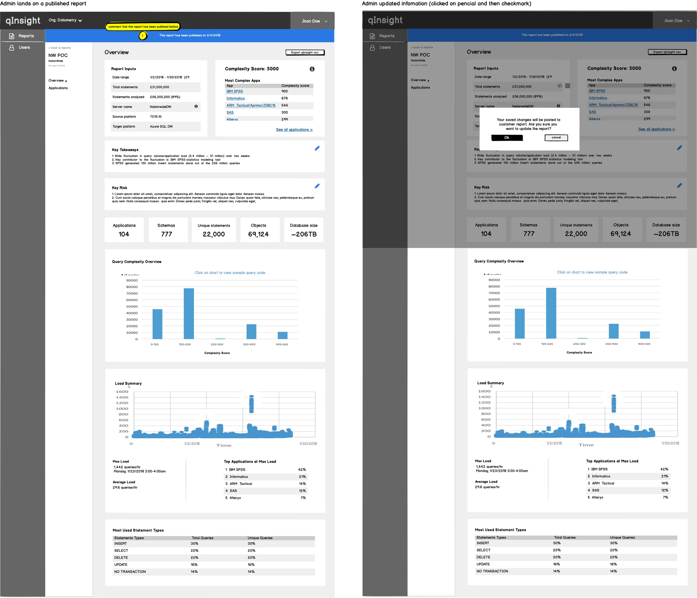
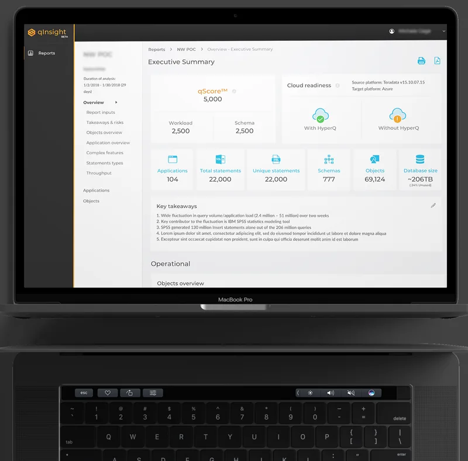
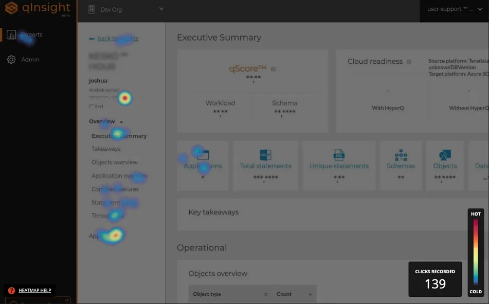

I led UX/UI design for Datometry qInsight — a platform that lets enterprises run applications built for on-premises data warehouses on major cloud data warehouses, without rewriting a single line of code. The Datometry team has since joined Snowflake to bring seamless application interoperability to the AI Data Cloud. This case study covers the design decisions, tradeoffs, and system thinking that made a technically complex platform feel operable — and what I'd do differently today.

Business problem: Enterprises have billions invested in applications built for on-premises data warehouses (Teradata, Netezza). Moving to modern cloud warehouses (Snowflake, BigQuery, Redshift) requires rewriting application logic — an effort measured in years and tens of millions of dollars.
Datometry's core product, Hyper-Q, is the virtualization engine that eliminates that cost. qInsight — the product I designed — is the operational UI that made Hyper-Q visible, configurable, and trustworthy: the surface where database administrators monitor query translation, diagnose compatibility issues, and take action.
User problem: Database administrators and platform engineers needed to monitor query translation in real time, diagnose compatibility issues, and take corrective action — on infrastructure they couldn't afford to break. The primary anxiety was: am I seeing everything I need to see before I act? The UI had to answer that question on every screen, for every state.
Why this matters for product goals: An opaque virtualization layer would be rejected by technical buyers regardless of its capabilities. Visibility and control were not UX nice-to-haves — they were the adoption gate. The design directly enabled commercial viability of the product.
I was the sole designer on a cross-functional squad. The table below clarifies what I owned individually versus what was collaborative:
| Area | Who | Notes |
|---|---|---|
| Information architecture Me | Solo | Full IA design — navigation structure, page hierarchy, MVP scope decisions |
| Wireframes & prototypes Me | Solo | Low-fi through high-fi; interactive prototypes for stakeholder validation |
| UI system & components Me | Solo | Dashboard patterns, table system, status indicators, error states |
| Handoff documentation Me | Solo | Specs, interaction annotations, spacing/token documentation |
| Domain understanding Shared | With Eng + PO | Data warehousing concepts, virtualization behavior, terminology |
| MVP scope definition Shared | With PO + Eng | I contributed design perspective; final scope decisions were joint |
| User validation Shared | With Stakeholders | Representative users limited; primary validation via stakeholder proxies |
The engagement ran in an Agile model with two-week sprints. Design led engineering by approximately one sprint — producing validated wireframes before implementation began on the corresponding feature. This rhythm prevented the most common failure mode in MVP-speed work: engineering building from ambiguous specs and accumulating UI debt from day one.

I chose to lead every primary view with system status rather than with actions or navigation. The alternative was a task-oriented layout (common in SaaS tools) prioritizing what users can do. The tradeoff: status-first is slower to reach actions from, but for infrastructure tools, knowing the current state of the system before taking any action is not optional — it's how operators prevent outages. Technical users accepted the extra step; the mental model matched their domain. Stakeholders initially pushed for action-first; I used two prototype comparisons to demonstrate the failure mode where users would take actions on a system in an unknown state.
Initial wireframes used modal overlays for query detail views — a common pattern that keeps the list view clean. I moved to an expandable inline panel after testing showed that users needed to reference list context while reading query detail — the modal cut off that comparison. The tradeoff was visual complexity on the page. I managed this with progressive disclosure: detail panels were collapsed by default and the expansion was sticky, preserving the user's position in the list.
There was pressure to simplify technical labels for a broader audience. I advocated for using the system's actual terminology (e.g., "rewrite rules," "dialect translation," "compatibility score") rather than abstracted equivalents. The reasoning: our users were database administrators. Simplified labels would feel patronizing and create a translation burden between the UI and their mental model of the underlying system. Simplification for the wrong audience is not clarity — it's noise.
I established the UI foundation as a lightweight component system — not a full design system, but enough standardization that the patterns could be extended consistently by the team without my involvement. The priorities were:

Three design directions failed during the MVP and were revised:

The component system was designed with extension in mind — even at MVP scale. Three decisions that enabled this:
The system was not a full design system — no token file, no Storybook. For an MVP engagement, that investment wasn't justified. What was justified: enough documentation that engineering could extend the patterns without needing to make new visual decisions. That's the minimum viable design system for a startup context.
The MVP shipped with no critical path errors requiring design rework — the primary measurable signal available for a fast-moving MVP engagement. All three core workflows (connection setup, query monitoring, issue diagnosis) passed stakeholder review in first presentation with no structural redesign requests.
After the MVP and subsequent iterations, the Datometry team joined Snowflake
to bring their database virtualization technology to the Snowflake AI Data Cloud.
The core value proposition that drove every design decision in qInsight —
enterprises moving from legacy warehouses to modern cloud platforms without rewriting applications —
proved commercially significant enough to attract one of the most valuable data platforms in the industry.
For context: the migration problem qInsight was designed to make visible and manageable is the same one
Snowflake needed to solve at enterprise scale. The product found its ultimate expression not as a standalone tool,
but as a capability embedded into a platform that serves the world's largest data organizations.
That trajectory — from MVP to enterprise acquisition — is the clearest possible validation that
the problem was real, the solution worked, and the design was part of what made it trustworthy enough to operate.
{kind=link}
{kind=link}
{kind=link}
{kind=link}
{kind=link}